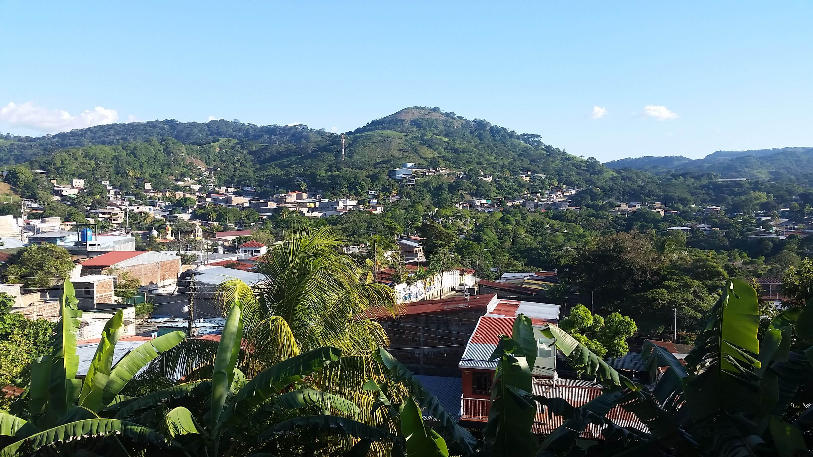

-
Los restos del cohete chino Long March 5B
Mayo 10, 2021 | Posted by erick mendoza varela , mas informacion
Si el cohete chino hubiera dañado alguna propiedad, infracturura o caido en mi patio,la gente agarraria fracmentos de este y podrian hacer muchas cosas🤔, como venderlo por internet, o al que compra chatarra verderselo😀 Los blogs son la mejor forma de compartir información y tus ideas. Mucho mas que ir a conferencias o salir en Youtube. Excepto si eres un rockstar. Pero estadísticamente no lo eres.... por ahora.
Cohete chino Long March 5B: dónde ha caído, en qué país y qué ha pasado con sus restos STR AFP Punto y final a la incertidumbre. Después de varias intensas jornadas haciendo cábalas sobre dónde podría caer el cohete Long March 5B lanzado por China para llevar a la cápsula Tianhe, finalmente sus restos han ido a parar al Océano Índico. Así lo asegura la agencia espacial china, que fija el oeste de las Islas Maldivas como punto de entrada. No obstante, la mayor parte del cohete se habría quemado al volver a entrar en la atmósfera terrestre, según el informe de la Oficina de Ingeniería Espacial Tripulada de China. Por su parte, el comandos Espacial de Estados Unidos informó que el proyectil había entrado en la Tierra sobre la Península Arábiga. El Long March 5B, con más de 30 metros de largo, cinco de ancho y más de 18 toneladas de peso, puso en órbita una nueva espacial china el pasado día 29 de abril. Sin embargo, tras sufrir problemas estuvo volando sin control por el espacio hasta que fue arrastrado a la Tierra por la gravedad.
-
Vista de la ventana del baño
mayo 8, 2021 | Posted by Erick Mendoza Varela, webdesign, mas fotos
Esta vista es de la ventana, del baño de mi casa, "es una gran vista cuando estas haciendo tus necesidades"🤣

-
Mis estudios Online
mayo 5, 2021 | Posted by Erick Mendoza Varela, linkedln
Comenze estudiar online este año por que ademas que es muy importante para uno mismo, en el sentido de ser una persona mas sabia, culta o con diversos conocimientos, sino tambien para poder acceder aun trabajo mejor

El dia que me enferme con SGB
Noviembre 1, 2021 | Posted by Erick Mendoza Varela, webdesign, mas fotos
Un lunes 7 de junio del 2021 me desperté con una sensación rara en todo el cuerpo, sentía como que había echo mucho ejercicio el día anterior, cuando llegue a trabajar por la noche sentía que me estaba temblando los músculos de la pierna y los del ratón que le dicen, sentía como un hormigueo no le di mucha importancia, al día siguiente sentía algo de dolor en todo el cuerpo mi suegra y mi esposa me decían que fuera a consultar pero no quería ir, ya que ir a la clínica del seguro es una pésima atención ya el martes por la noche que estaba trabajando sentía debilidad y dolor en todo el cuerpo pero aun no quería ir a consultar, el miércoles ya andaba renco le pedí a un compañero del trabajo que me fuera a dejar una caja de gaseosa que me habían regalado porque en este mes estaba de cumple y a todos los de la coca cola les regalan su caja para su cumple, yo ya no tenía fuerzas para levantar la caja, cuando me fui a dormir no aguantaba el dolor y el jueves por la mañana me convenció mi esposa de ir a la clínica, ya no pude sacar la moto del garaje ella me ayudo a sacarla nos fuimos en segunda hasta la clínica porque no tenía ni fuerza para meter cambio en la moto, llegando a la clínica me caí en unas gradas por que no las pude subir de ahí ya no sentía las piernas pase internado en emergencia luego por la tarde me trasladaron al hospital donde aún me seguían realizando exámenes y no daban que era lo que tenía, es que en todo Boaco no hay un neurólogo, mi tía Gabriel me acompaño toda la noche en el hospital cada vez me sentía peor, mi papa llego por la mañana del viernes, me sacaron el líquido cefalorraquídeo de la columna porque aún me seguían realizando exámenes, con decirles que me estaban metiendo potasio por intravenosa y mi potasio estaba bien, una doctora llego a decirle que me podía dar una sobre dosis de potasio, es horrible la atención en este hospital de Boaco.
Me trasladaron a Managua al hospital solidaridad para realizarme unos exámenes Electromiografía a medio día del día viernes los documento que mandaron de mi hospital estaban mal habían solicitado que me revisara el neurocirujano y cuando llego el neurocirujano me explico que el operaba no valoraba pero igual no importa me dijo comenzó a explicarme lo que podía tener ya que no hay un examen exacto que diga que tienes SGB, yo andaba en silla de rueda es horrible no sentir las piernas, había una posibilidad que podía curarme con el medicamento.
Me trasladaron de regreso al hospital de Boaco y cuando llegamos con mi padre y mi esposa les dije que me sentía cada vez peor, mi familia comenzó a desesperarse mi tía comenzó a tratar a todo mundo porque nadie hacia algo, llego un doctor internista que estaba de turno y comenzó a realizar llamadas para ver si aquí había hemoglobina en el hospital o en la clínica del seguro y le dijeron que eso solo en el simón Bolívar (una farmacia del gobierno que tienen medicamento poco común para distintas enfermedades) me trasladaron para Managua de nuevo en la ambulancia mi padre era el que se iba ir conmigo, la ambulancia paso por donde estaba mi hija para que me pudiera despedir porque me podía pasar lo peor y podía ser la última vez que la miraba.
llegue a Managua tipo 9 de la noche me trasladaron e emergencia y aun me seguían realizando exámenes de sangre orina pero luego me trasladaron aúna sala general ahí estuve unas horas con mi papa solo esperar nos tocaba hacer, le decía a mi papa que ya quería el medicamento yo me sentía tan débil que ni escribir en el celular podía ya a varios amigos ya no les pude seguir contestando mensajes, llego un doctor internista que estaba de turno nos explicó que era lo que iba pasar me iban a trasladar a la sala de cuidado intensivos y ahí me iban aplicar el medicamento y que este síndrome iba seguir desarrollando y que podía pasar lo peor, mi padre firmo todos los documentos y al rato se escuchaba a lo lejos el sonido de las ruedas de la camilla que venía a recogerme para llevarme a UCI, me ingresaron como a eso de las dos de la mañana me colocaron un montón de aparatos solo pensaba que aquí iba a morir y que podía salir vivo o muerto de este lugar casi ni dormí esa madrugada pero en la sala habían tres enfermeros y el internista de turno ellos estaban monitoreándome todo el tiempo por la mañana tenía varios doctores revisándome y me dijeron que ya me estaban consiguiendo la hemoglobina, me querían colocar un catéter por el pecho pero no pudieron dicen que mi pecho es muy duro y me tuvieron que colocármelo por la yugular, solo sentía como la sangre me recorría cuando me estaban abriendo.
A las 12 del medio entraron las visitas solo por media hora recuerdo que mi papa estuvo unos 15 minutos conmigo mi esposa otros minutos mi tía, así se repartieron el tiempo solo dejan entrar a una persona y el tiempo de visita es de 30 minuto al día, así en la semana mi familia se repartía los minutos para verme, como a las 2 pm me comenzaron a colocar la hemoglobina yo me sentía tan feliz en ese momento pero eran 35 frascos que me tenían que colocar recuerdo que venían de Suecia ahí pase una semana en UCI, mi padre paso toda la semana en un pasillo cada vez que salía un enfermero preguntaba por mi, mi esposa estuvo 4 días ahí también, en ocasiones me quedaba dormido pierdes la noción del tiempo y lo único que esperas con ansias es la hora de la visita, había un doctor que era el que cubría el turno de la mañana y colocaba música en spotify buenas rolas del tipo clásica de los 70 80.
formé muchas amistades con los enfermero me explicaban más de este síndrome y como hay variantes más fuerte que otras, lo bueno fue que no me llegaron a entubar los doctores dicen que llegue a tiempo ya que otros pacientes ingresan hasta cuando ya están tiesos ya que la enfermedad entre más avanza es más difícil recuperarse, mi madre llego unos días antes que me dieran de alta porque ella vive en el extranjero, el dolor en el cuerpo es horrible es un dolor y ardor al mismo tiempo, las secuelas que me quedaron fueron la debilidad en el cuerpo, el dolor que en ocasiones meda estos tipo de episodios muy fuerte afligen, también los dolores de cabeza que nunca había sentido un dolor de cabeza tan fuerte es horrible, calambres en las piernas, yo soy bueno a dormir pero después de esto me cuesta mucho dormir ya que no puedo estar acostado en una posición se me entume el cuerpo e igual sentado no puedo estar mucho tiempo, en ocasiones siento una fatiga horrible la presión se me sube o baja pero estar en la casa e ir a fisioterapia y el apoyo de la familia ayuda mucho en la recuperación siempre estaré agradecido con todos ellos.
Encontré un grupo en FB de gente que ha sobrevivido a esto y hablan mucho de las formas como afrontar las secuelas, luego de esto mi vida ya no es la misma por lo menos sigo vivo qué más puedo pedir, al comienzo de noviembre comencé a caminar sin bastón, pero distancia largas me llevo el bastón por que las piernas en ocasiones siento mucha debilidad, me caído varias veces, pero no me golpeado mucho ya comencé a trabajar nuevamente solo espero que me valla bien a ver qué tal me va.
 My name is Jessie Doe. I´m 26 years old and I´m living in the New York City.
My name is Jessie Doe. I´m 26 years old and I´m living in the New York City.